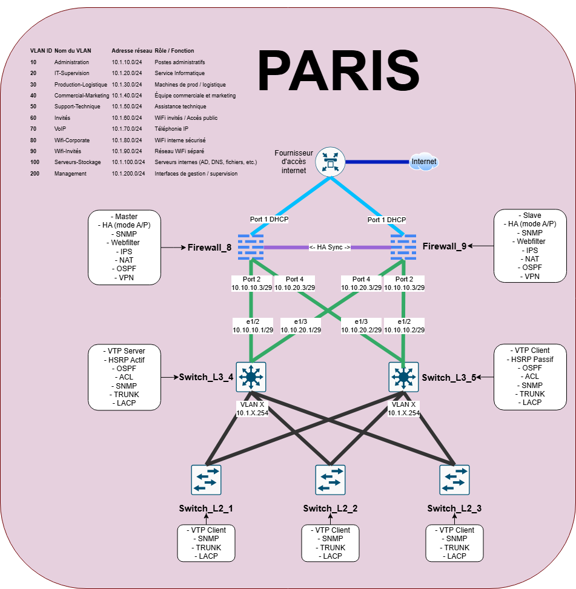

Simulation Réseau
Projet PrintNet – Comportement du trafic en fonction des équipements actifs

Activer/Désactiver les composants
FW8
FW9
SW_L3_4
SW_L3_5
Tracert simulé
Lancer le tracert
⬅️ Retour à l’accueil